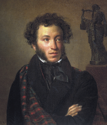

Alexander Sergeyevich Pushkin (/ˈpʊʃkɪn/;[1] Russian: Алекса́ндр Серге́евич Пу́шкин, tr. Aleksandr Sergeyevich Pushkin; IPA: [ɐlʲɪˈksandr sʲɪˈrɡʲejɪvʲɪtɕ ˈpuʂkʲɪn] (About this sound listen); 8 June [O.S. 26 May] 1799 – 11 February [O.S. 29 January] 1837) was a Russian poet, playwright, and novelist of the Romantic era[2] who is considered by many to be the greatest Russian poet[3][4][5][6] and the founder of modern Russian literature.[7][8]
Pushkin was born into Russian nobility in Moscow. Нis father, Sergey Lvovich Pushkin, belonged to Pushkin noble families. His matrilineal great-grandfather was Abram Petrovich Gannibal. He published his first poem at the age of fifteen, and was widely recognized by the literary establishment by the time of his graduation from the Tsarskoye Selo Lyceum. While under the strict surveillance of the Tsar's political police and unable to publish, Pushkin wrote his most famous play, the drama Boris Godunov. His novel in verse, Eugene Onegin, was serialized between 1825 and 1832.
Pushkin was fatally wounded in a duel with his brother-in-law, Georges-Charles de Heeckeren d'Anthès, also known as Dantes-Gekkern, a French officer serving with the Chevalier Guard Regiment who attempted to seduce the poet's wife, Natalia Pushkina.